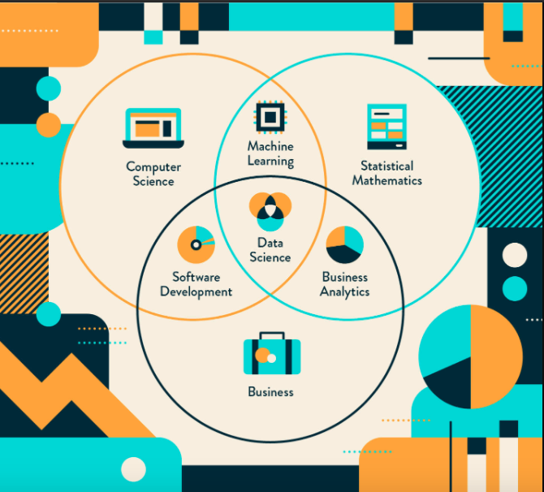

My future
Since, I'm in high school, I found a person who is a professor in Mahidol university, He work as an actuary scientist. He work and doing a test in SOA as well. One of my friend also took a test and pass it recently.
From this point, I really have an inspired for this point and what I want to achieve and test for myself for loving and delicate on the actuary work is becoming one of them.
Even though, I didn't achieve them is because of personal reason. I didn't give up and set a new goal which is becoming a person who working in data. As this work require the same skill as a actuary science but, they could
do in many business while actuary science focus on insurance and financial risk management. My future as I grow up, I couldn't decide what's going to do but I'm sure that I working on data field. Here's what my possible career.
1.Data Scientist

This is the one that I have interest for a while up until now. For my reason, I think is one of the work with the data and analyze. It makes a lot of work such as data cleaning which is troublesome
or using program to analyze and make a prediction it. There's a lot of steps and requirement to do this work. I'm working hard to do on this side of the work as a person. I'm really interest in it.
They've a same skill on data analyst. but they use stat and analyze the data as well they require a lot of skill on math, stats, Al and computer science.
Not just only those skills, Soft skill is also important as well. They generate a meaningful data and plan for organization as well.
They also finding trend and predict it as well. I've work on the mini project and though it was fun. So, I decide to take a step on this field.
I also thinking that, They're interesting which is why I'm really interested.
2.Data engineer

For this job, They require the same skill as data scientist and data analyst, They manage the data the most which is raw data. I'm currently study on this work.
They can told what the data gonna need and It's like working on the back-end on web developer but as a data engineer. They've been well known for only a few years.
They also use their software engineering, programming, product development, networking and cloud computing skills to build and manage data warehouses, pipelines and data lakes.
As for me, I couldn't make sure what to do, Data engineer is the one of the work that I really interest as they use computer and
work with the data the most out of all the work on the data. I've study what's job on the data and this is one of them that looks interesting and fun as they work on raw data.